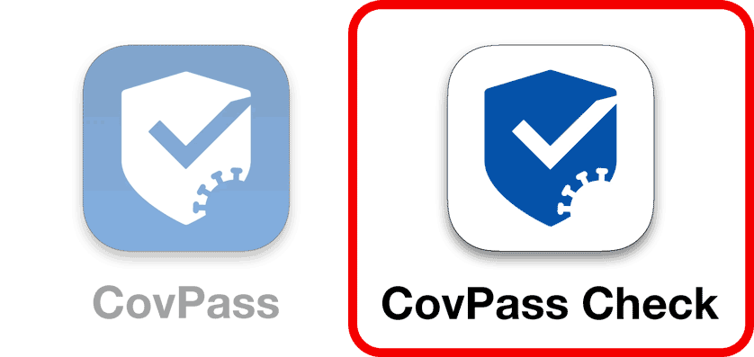

Was Sie tun müssen:

Name unter dem QR-Code anpassen:
Restaurants, Bars, Friseure usw. sollten eigentlich die Impfzertifikate ihrer Kund*innen überprüfen, tun es aber nicht richtig.
Es genügt nicht, einen flüchtigen Blick auf das Handy zu werfen. Betreiber*innen müssen den QR-Code mit der CovPassCheck-App scannen und den Namen in der Check-App mit dem Personalausweis/Führerschein abgleichen. Wer das nicht tut, läuft Gefahr, von Impfverweigerern systematisch hinters Licht geführt zu werden und Menschenleben zu gefährden.
Um den Betreiber*innen einfach und eindrücklich zu erklären, wie man die digitalen Impfzertifikate richtig überprüft, gibt es diesen Artikel. Und so funktioniert es:
1. Öffnen diesen Artikel auf deinem Smartphone.
2. Füge diese Seite zu deinem Home-Bildschirm hinzu.
iPhone: Tippe unten zentral auf das quadratische Icon mit dem Pfeil, wähle den Punkt "Zum Home-Bildschirm" und auf "Hinzufügen".
Android: Tippe auf die drei Punkte rechts oben und wähle den Punkt "Zum Startbildschirm hinzufügen".
3. Wenn du jetzt auf deinem Home-Bildschirm die neue App startest, öffnet sich eine Fake-CovPass-App mit deinem Namen und einem falschen QR-Code.
Wenn du das nächste mal in einem Restaurant bist, zeige einfach die Fake-Covpass-App vor. Wenn das Personal mit einem kurzen Blick auf dein Handy das Impfzertifikat akzeptiert, kannst du in der App einfach nach unten scrollen, um zu zeigen, dass das Personal gerade auf eine Fälschung reingefallen ist. Dazu erscheint auch eine Kurzanleitung, die erklärt, wie man Impfzertifikate richtig überprüft.